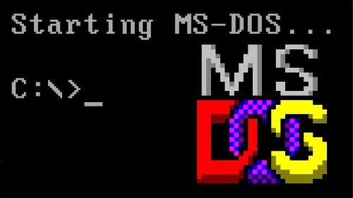
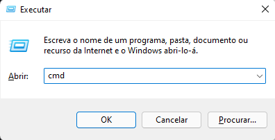
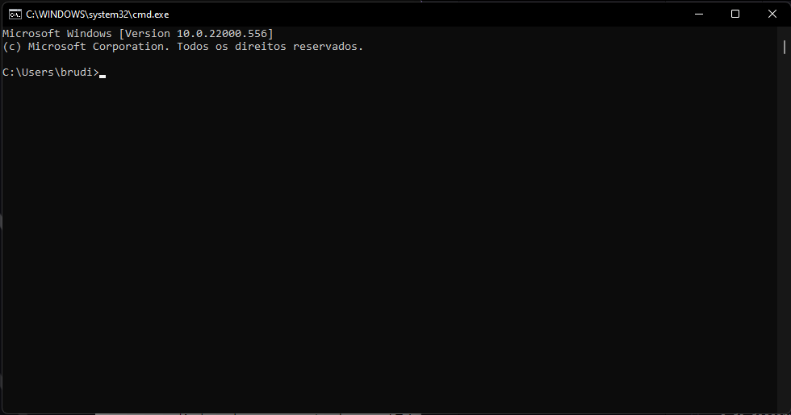

SoftwareCenter: Comandos do MS DOS
Veja a lista dos comandos do MS DOS.
Por Bruno Pinheiro; Para O SoftwareCenter
23/03/2022 19h13 • Atualizado há 7 horas

O que é o MS DOS?
MS-DOS, acrônimo de Microsoft Disk Operating System, é um sistema operativo comprado pela Microsoft para ser usado na linha de computadores IBM PC.
Lista dos comandos básicos do MS DOS
Caso não saiba como abrir a linha de comandos temos aqui um mini tutorial:
Passo 1. Pressione  +R até abrir o "executar".
+R até abrir o "executar".
Passo 2. Depois escreva "cmd" e clique no "OK".
E por fim aparecerá esta janela:
Agora passando para a Lista dos códigos:
Espero que vos tenha ajudado com o vosso Trabalho ou ter vos despertado a curiosidade sobre a Linha de comandos.